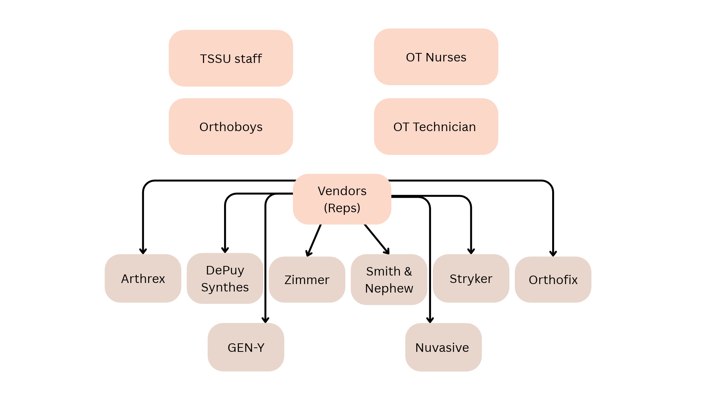
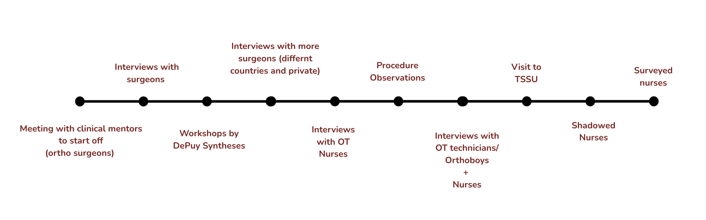
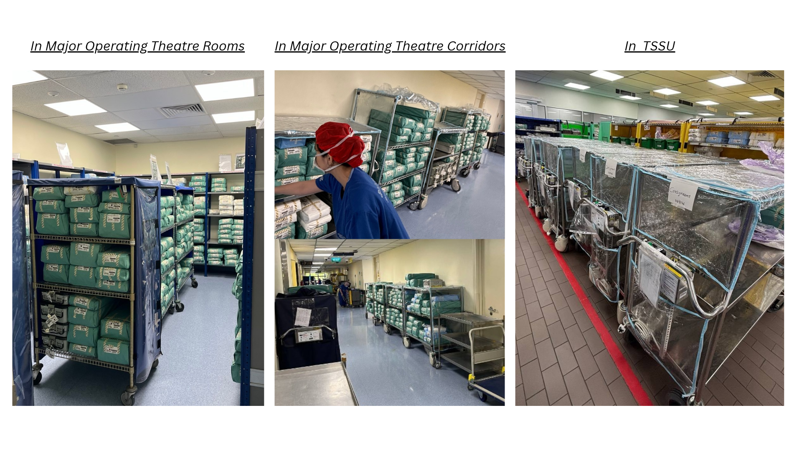
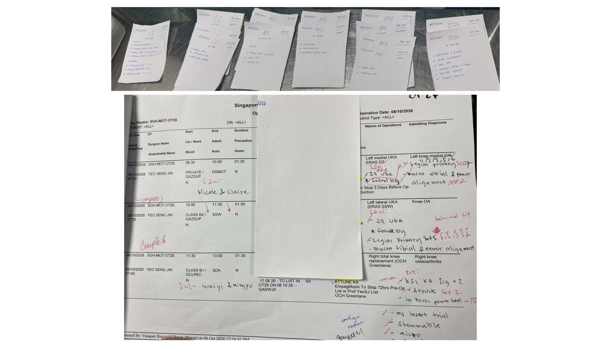
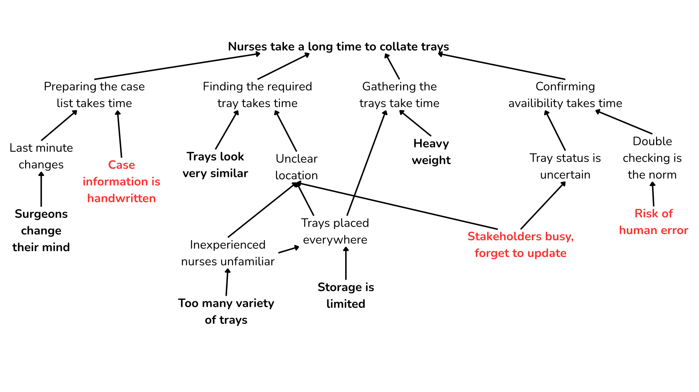
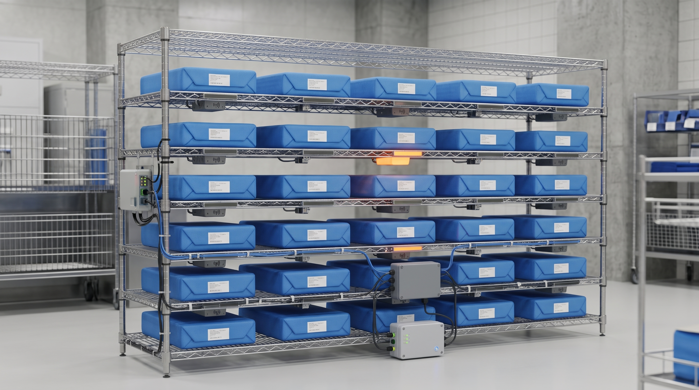
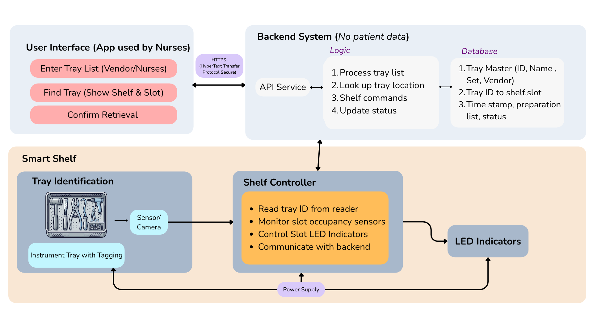
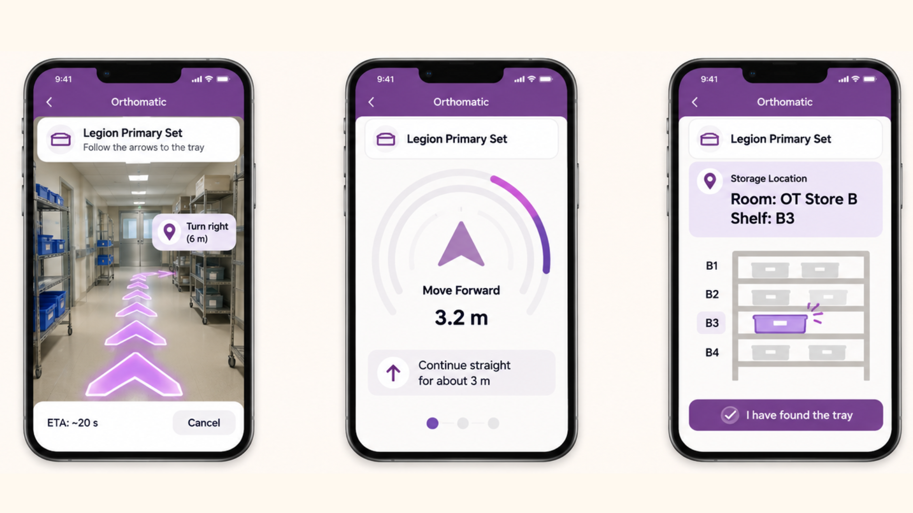
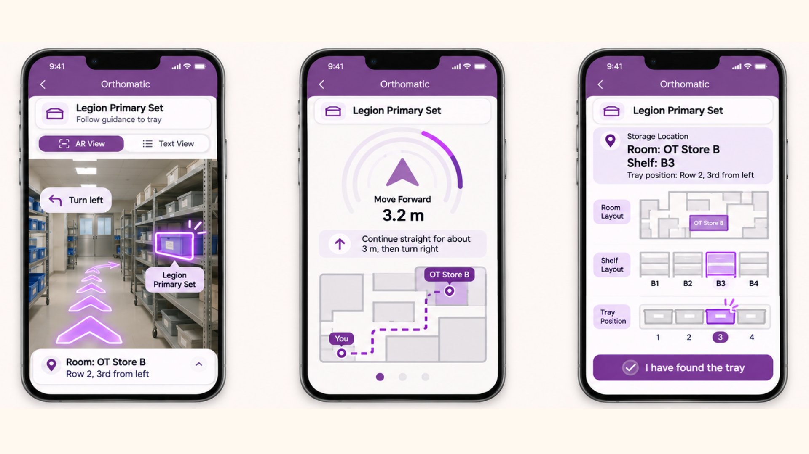

Orthomatic (EIM-435)
Improving Orthopaedic Instrument Tray Identification and Retrieval
Table of Contents
Abstract
Orthopaedic surgeries require a variety of specialised instruments, which are organised into trays and prepared before each operation. Depending on the procedure, these trays may come from the hospital's own inventory or external vendors.
However, locating these trays is not straightforward. Trays may be stored in different areas, moved between operating theatres or undergoing sterilisation. Many trays also look similar, making it difficult to identify the correct set quickly.
Through clinical observations, stakeholder interviews and surveys, our team identified a key problem: limited visibility of the location and availability of orthopaedic instrument trays during preoperative preparation.
Orthomatic aims to address this uncertainty by exploring ways to improve tray identification, location tracking and retrieval guidance. Our target is to reduce preoperative tray-search time to no more than three minutes per tray.
This semester, we focused on understanding the problem, identifying design requirements, generating possible solutions and conducting initial technical and user interface tests.
1. Clinical Background and Problem Context
1.1 Orthopaedic Instrument Trays

Orthopaedic surgeries use specialised instruments for procedures such as total knee replacement, hip replacement, spinal surgery and fracture repair. These instruments are organised into trays according to their function, procedure and manufacturer/vendors. One specialised set can be made up of multiple trays and some surgeries may require more than one set from different vendors.
In our preliminary interviews with surgeons, we discovered that orthopaedic surgeons have the option to choose which vendors’ instruments and implants they want to use for a patient. Other than for simple procedures, vendors will send in representatives (reps) to guide OT staff on instrument use. Surgeons choose vendors depending on vendor relationship, quality of service and other factors, at times, it may even be random.
Each tray may contain many instruments and can be heavy, making handling and retrieval physically demanding. The number of trays required also varies between procedures. Our research identified approximately 6-10 trays for total knee replacement, 5-9 for partial hip replacement, 15-20 for spinal surgery and 5-10 for fracture surgery. Given an estimate of 50,000 to 55,000 orthopaedic surgeries in Singapore per year, and 7 to 20 trays prepared per surgery, this means about 250,000 to 715,000 trays used per year. These figures are estimates, as actual requirements depend on the procedure, surgeon and vendor.
Vendor instrument trays can either be consignment sets or warehouse sets. Consignment sets are vendor-owned but stored in hospital premises. Warehouse sets are sent to the hospital by the vendors whenever they are needed. These trays rotate between hospitals based on where they are needed. Instrument trays range in the price of thousands, which is why they remain vendor owned. In addition to vendor instrument trays, surgical teams may require vendor implant sets, the hospitals’ own tray sets, and consumables.
Overall, this results in a complex preparation process, especially since multiple surgeries are scheduled back to back within the same day. Any delays or breaks in the workflow may cause consequences such as postponement of surgeries and in the worst case, compromise of patient safety.
1.2 Stakeholders Involved in Tray Preparation
Preparing instrument trays involves several groups of people, each with different responsibilities.
Surgeons determine the required instruments, vendors provide specialised sets, and TSSU staff handle receiving, washing, packing and sterilisation. OT nurses coordinate these activities to ensure that the required trays are available for surgery.

1.3 Understanding the Problem Through Clinical Research
We carried out interviews, hospital visits, procedure observations, nurse shadowing and a survey to understand the current tray preparation workflow.
Our interim research included 23 stakeholder interviews, five procedure observations and 30 nurse survey responses.


During our hospital visits, we observed trays stored in OT rooms, OT corridors and storage areas in TSSU. Some trays were stacked on racks or trolleys, while others were placed in temporary storage locations. In the OT, these trays are sometimes organised by vendor, but due to space limitations, trays may be placed wherever space is available. After sterilisation, trays can also be temporarily stored in carts in TSSU before being transported to the OT.

We also observed handwritten lists and notes being used to communicate which trays were required or had already been prepared.

These observations showed that locating a tray is not simply a matter of checking a fixed storage position. Its location may change throughout the day, depending on the surgery schedule, sterilisation process and movement of trays between different parts of the hospital.
Nurses must write out the trays needed for each surgery, check the storage areas for the required trays and transport them to their respective OTs. As each tray is wrapped in layers of sterile wrapping, the trays look very similar, leaving nurses to rely on reading each label individually.
1.4 Findings from Nurses
Our interviews and survey highlighted several recurring difficulties during tray preparation.
First, nurses may need to search different locations because trays are moved or temporarily stored in other areas.
Second, many trays look similar, while labels may be small or inconsistent between vendors.
Third, nurses may not know whether a tray is available. It may still be undergoing sterilisation, in use or awaiting delivery.
Finally, nurses often need to contact TSSU staff, vendors or other nurses to confirm tray locations and availability.
2. Problem Identification and Prioritisation
2.1 Root Cause Analysis
We conducted a root cause analysis to identify the main factors contributing to prolonged tray preparation and retrieval.

2.2 Problem Prioritisation
We used a problem prioritisation matrix to compare different areas of intervention. Each problem was assessed based on time impact (40%), technical feasibility (35%) and ease of implementation (25%).
| Problem Area | Weighted Score |
|---|---|
| Surgeon-centred decision-making | 1.80 |
| Manual workflow | 4.25 |
| Limited storage infrastructure | 2.85 |
| Large tray variety | 2.60 |
| Tray design | 2.25 |
Manual workflow received the highest weighted score. However, further analysis showed that manual workflow describes the current process rather than the underlying problem.
Through stakeholder interviews and clinical observations, we identified uncertainty about tray location and availability as a key issue.
2.3 Refined Problem Statement
OT nurses face uncertainty about the location and availability of orthopaedic instrument trays during preoperative preparation, leading to additional searching, repeated communication and time spent gathering the required instruments.
2.4 Needs Statement
A seamless, reliable way to identify and retrieve surgical instrument trays during preoperative preparation, such that search time is no more than three minutes per tray, so hospital staff can dedicate more time to patient care.
3. Value Proposition and Design Requirements
3.1 Value Proposition
Orthomatic aims to reduce the uncertainty nurses face when locating orthopaedic instrument trays.
Our proposed value lies in combining tray identification, location information and physical retrieval guidance into a workflow designed around the needs of OT nurses.
Rather than replacing existing hospital systems, Orthomatic aims to fit into the current workflow and support the specific task of identifying and retrieving the correct tray.
3.2 Design Requirements
Based on our clinical research, we identified the following needs criteria.
Must Have
| S/N | Category | Criteria | Rationale |
|---|---|---|---|
| 1 | Safety | Must maintain compatibility with existing surgical tray sterilisation processes without compromising sterility | Any modifications to surgical trays must preserve existing sterilisation standards to ensure patient safety |
| 2 | Efficiency | Must enable users to locate a required surgical tray within 3 minutes | If the location of a tray is known, nurses currently take about 3–5 minutes to locate it. We want to make all corner cases where nurses struggle for 30 minutes to locate one tray meet at least this standard |
| 3 | Learning Curve | Must enable new users to independently locate surgical trays using the system within 1 month | Consignment team nurses currently require approximately 1–3 months to familiarise themselves with tray names and locations |
Good-to-Have
| S/N | Category | Criteria | Rationale |
|---|---|---|---|
| 1 | Sustainability | Solution is reusable rather than one-off | Could reduce long-term cost and unnecessary waste |
| 2 | Efficiency | Reduces double checking by nurses | Nurses spend extra time double checking the cases prepared by previous shifts due to the high possibility of human error |
| 3 | Efficacy | Ability to track individual instruments | When instruments go missing or are dropped during surgery, nurses can easily track the location of another tray with the instrument without expert knowledge of tray contents in case of emergency |
These targets will be a guide for future testing and could be refined depending on feedback along the way.
4. Concept Generation and Selection
4.1 Brainstorming and Concept Exploration
We used SCAMPER, BruteThink and the ACE framework to generate and organise possible solutions.
We identified five main system functions: tray identification, location detection, user interface, retrieval guidance and retrieval confirmation.

4.2 Concept A: Smart Shelf
The Smart Shelf is designed to identify trays, record their locations and guide nurses to the correct shelf position.

4.3 Concept B: Handheld Finder
The Handheld Finder is a portable device that nurses could use to search for tagged trays.
A handheld reader could detect nearby trays and provide feedback to guide nurses towards the required set.

4.4 Concept Evaluation
Initial nurse feedback supported further investigation of the Smart Shelf because shelf indicators could provide direct retrieval guidance.
The Handheld Finder raised concerns about requiring nurses to collect and operate an additional device.
We therefore selected the Smart Shelf as our lead concept and refined it into a retrofit system that could be attached to existing shelves.
4.5 Retrofit Smart Shelf Locator
The proposed Retrofit Smart Shelf Locator combines tray identification, shelf sensors, LED indicators and a mobile application.
A backend system links tray IDs to their recorded shelf locations, allowing nurses to search for trays and receive visual guidance during retrieval.

Automatic tray identification and exact-slot localisation remain development objectives requiring further validation.
5. Initial Prototype Development and Testing
We began prototyping by investigating individual functions before building the complete system.
5.1 Barcode Testing: Lighting Conditions
We tested barcode identification at a fixed distance of 30 cm under four lighting conditions.
| Illuminance | Distance | Detected |
|---|---|---|
| 53 lux | 30 cm | Yes |
| 150 lux | 30 cm | Yes |
| 430 lux | 30 cm | Yes |
| 3000 lux | 30 cm | Yes |
Barcode detection succeeded under all tested lighting conditions. Further repeated trials are needed to establish reliability.
5.2 Barcode Testing: Scanning Coverage
We investigated whether a fixed camera could identify barcodes at different lateral positions and orientations.
| Angle | 15 cm Offset | 45 cm Offset | 60 cm Offset |
|---|---|---|---|
| 90° | Yes | No | No |
| 60° | Yes | No | No |
| 45° | Yes | No | No |
Scanning succeeded at the 15 cm offset but failed at larger offsets under our tested setup.
5.3 NFC Testing: Moving Tray Identification
We tested whether NFC could identify a tag while it moved across a 10 cm path.
| Trial | Speed | Detected |
|---|---|---|
| 1 | 2.73 cm/s | Yes |
| 2 | 3.61 cm/s | Yes |
| 3 | 6.21 cm/s | No |
| Nurse handling estimate | 23.25 cm/s | No |
These findings raised concerns about the tested NFC arrangement for automatic identification during normal tray movement.
5.4 Technical Findings and Design Implications
Our initial tests revealed limitations in barcode scanning coverage and NFC identification during movement.
We plan to investigate passive UHF RFID, particularly how metal interference, tag spacing and reader placement affect identification accuracy.
6. User Interface Development and Feedback
We focused on two main features: how nurses enter required trays and how they are guided during retrieval.
6.1.1 Prototype 1: Entering Required Trays
We developed three initial interface options: Vendor Entry, Photo and Extract, and Manual Autocomplete.

Nurse feedback highlighted the importance of including the vendor, procedure, OT room and surgery time.
Further discussions showed that nurses also need to know whether trays are available for use.
6.1.2 Prototype 2: Entering Required Trays
Based on the feedback, we refined the interface to explore Shared Vendor Entry, Scan-and-Edit and Screenshot Import.

These approaches aim to reduce repeated data entry while improving access to tray requirements and availability information.
6.2.1 Prototype 1: Retrieval Guidance
We explored Camera-Based Arrows, Direction and Proximity, and Recorded Storage Location.

Nurse feedback suggested that visual navigation may be useful for junior nurses, while experienced nurses may prefer direct location information.
6.2.2 Prototype 2: Retrieval Guidance
The revised interfaces place greater emphasis on showing the exact storage zone, shelf and slot.

Visual highlighting was also explored to help nurses identify the correct tray among surrounding sets.
7. Limitations and Future Development Plan
7.1 Current Limitations
We have not yet demonstrated reliable identification of multiple metal trays placed close together.
Exact-slot localisation also remains unresolved, and our current tests use simplified setups.
7.2 Planned Technical Development
We will investigate UHF RFID under conditions that better represent the hospital storage environment.
We plan to build a small-scale mock shelf to test tray placement, removal and relocation.
7.3 Planned User Testing
Future testing will compare preparation-list entry, retrieval guidance and retrieval confirmation.
7.4 Integrated System Validation
We will compare the integrated prototype against a representative manual retrieval process.
Measurements will include retrieval time, identification accuracy, location accuracy and user effort.
8. Conclusion
Through clinical observations, stakeholder interviews and nurse surveys, we identified uncertainty about tray location and availability as an important challenge during preoperative preparation.
We explored several possible solutions and selected the Smart Shelf as a promising concept for further development.
Our initial barcode and NFC experiments revealed practical identification limitations, while feedback from nurses and a vendor helped refine the proposed workflow.
Moving forward, we will focus on reliable tray identification, accurate location detection and integrated system testing.
References
Insert your complete academic reference list here.
Annexes
The following annexes contain supporting materials from our stakeholder interviews, brainstorming activities and initial technical testing.
Annex A. Selected Stakeholder Interview Notes
The following tables present selected notes from stakeholder interviews conducted during the discovery phase.
Annex B. Brainstorming and Concept Development
This annex presents our brainstorming activities, including the ACE framework, BruteThink and early concept sketches.


Annex C. Initial Technical Prototyping
This annex contains photographs from our initial barcode and NFC experiments.